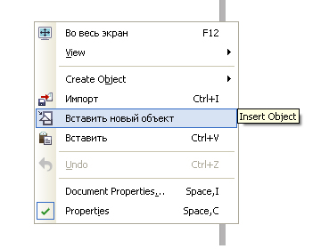
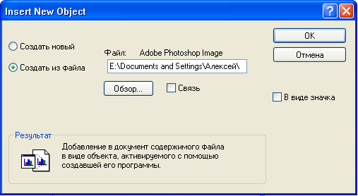
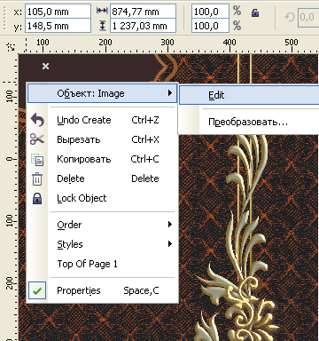
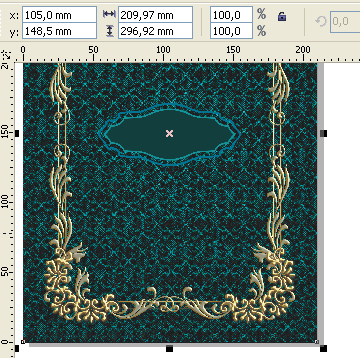

Редактирование в Photoshop вставленного в CorelDRAW растрового изображения
Те, кому приходится выполнять много работы в программе CorelDRAW, наверняка сталкивались с ситуацией, когда вставленное в документ растровое изображение вдруг надо подредактировать.Естественно, что намного удобнее это делать не выходя из программы CorelDRAW, то есть без дополнительного открывания исходного изображения в растровом редакторе, сохранения его после редактирования и нового импорта в документ. Самый простой путь для этого — использовать возможность кнопки «Edit Bitmap». Правда надо освоить программу Corel PHOTO-PAINT. А как быть тем, кто хотел бы это сделать в Photoshop? Спасибо, нашлись умные головы, придумали нужный макрос. Но вот беда, не ко всяким ситуациям этот макрос адаптирован. Я, например, не использую особые навороты последних версий Photoshop, и макрос мне не помогает.
Однако, есть способ обойтись без него, используя средства самой программы CorelDRAW.
Сразу должен оговориться, что этот способ имеет некоторые существенные ограничения, поэтому, те, кто пользуются макросом, могут не волноваться.
Первое ограничение: вставленное изображение является OLE-объектом, поэтому ему присущи все ограничения, накладываемые на такие объекты, но, собственно, именно благодаря использованию программой CorelDRAW технологии связывания и внедрения объектов (Object Lincing and Embedding), как раз и появляется возможность редактирования в родной программе не выходя из программы-клиента.
Самое существенное ограничение для OLE-объектов — их невозможно поворачивать (собственно, при необходимости поворота как раз и придётся выполнить это самое редактирование в родной программе).
И второе существенное ограничение — способ возможен только с файлами типа PSD. То есть исходное изображение других растровых форматов, прежде чем встраивать, надо будет открывать в растровом редакторе и пересохранить в формате PSD.
Также надо помнить об особенностях связанных и встроенных изображений:
— для связанного изображения в документе, использующем его, будут отражаться все изменения (вплоть до замены) исходного файла, выполненные независимо от программы-клиента (CorelDRAW); сам файл документа имеет меньший объём, по сравнению с документом, где изображения встроены; Файлы изображений должны всегда прилагаться к файлу документа.
— для встроенных изображений сохраняется возможность редактирования, не выходя из программы-клиента; изменения исходного файла не отражаются в документе; исходные файлы не нужно прилагать к файлу документа; файл документа имеет больший объём по сравнению с документом, где изображения связаны.
Ещё одним недостатком способа является то, что вставленные изображения программа масштабирует до разрешения 72 dpi. Поэтому после вставки изображения масштабируйте его до нужного физического размера.
Если необходимо точно установить разрешение изображения (к сожалению, для данного случая его невозможно проконтролировать в окне «Свойства изображения»), то придётся сразу же выполнить первое редактирование изображения в родной программе.
Теперь, как связывать и встраивать изображения.
В любом месте открытого документа щёлкните пр. кн. мыши и в открывшемся контекстном меню выбирете «Вставить новый объект»

В открывшемся окне выбирете «Создать из файла», нажмите кн. «Обзор», выбирете нужный PSD-файл, нажмите кн. «Открыть».
Затем в этом же окне установите флажок в окошке «Связь» для вставки связанного изображения или не устанавливайте для вставки встроенного изображения.

Как уже говорилось, вставленное изображение будет иметь разрешение 72dpi.
На следующем рисунке видно: на панели свойств, в окошках координат —координаты центра формата А4, а в окошках размеров — огромные значения, хотя исходное изображение было формата А4. Можно масштабировать изображение обычным способом, контролируя его физические размеры в окошках размеров на панели свойств, но, если необходимо установить точное значение разрешения, придётся выполнить первое редактирование. Для этого щёлкните по изображению пр. кн. Мыши и в открывшемся меню выбирете «Объект:Image» и далее «Edit».

Изображение должно открыться в Photoshop. В окне «Размер изображения» установите нужное значение разрешения и масштабируйте без пересэмплирования. Закройте изображение. В CorelDRAW оно уже будет с установленным Вами разрешением. На рисунке ниже видно: в окошках размеров теперь уже с небольшой погрешностью значения, соответствующие формату А4, также в этом же этапе редактирования была выполнена коррекция цвета, что и видно на рисунке.

На форуме встречался вопрос о коллажах. В описанном способе можно делать их запросто. Только каждый вставленный OLE-объект открывать для редактирования придётся поочерёдно, затем сделать из них коллаж, также можно добавить и ещё какие-либо изображения из сторонних файлов. После закрытия Файла с коллажем и файлов, с которых были взяты изображения, в программе CorelDRAW удалите лишние OLE-объекты. Коллаж может быть как в виде многослойного файла, так и однослойным, после слияния слоёв в Photoshop.
Специально для CDRPRO.RU
Запрещается копирование и публикация любым способом данного урока или части его без письменного согласия автора.